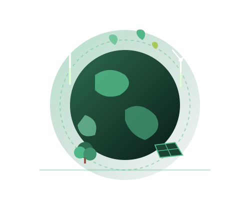

Cok Agung Aris Mahaputra
NIM: 2515091077
Bertugas menyusun halaman Beranda dan Edukasi, serta merapikan struktur teks materi sains iklim.
Klimatika dikembangkan sebagai proyek akademik Ujian Tengah Semester (UTS) mata kuliah Pemrograman Web untuk mengedukasi masyarakat mengenai urgensi Aksi Iklim (SDG 13).
Website Klimatika dirancang sebagai sarana edukasi masyarakat mengenai isu perubahan iklim global dan dampaknya di Indonesia. Melalui penyampaian visual yang ramah pembaca, masyarakat diharapkan lebih mudah memahami sains iklim dan menerapkan gaya hidup berkelanjutan.
Website ini dikembangkan untuk memenuhi tugas Ujian Tengah Semester (UTS) mata kuliah Pemrograman Web, dengan menyajikan materi yang mudah dipahami, terstruktur rapi, dan nyaman diakses di berbagai perangkat.

Website ini disusun secara berkelompok oleh tiga orang mahasiswa dengan pembagian tugas yang merata:
Bertugas menyusun halaman Beranda dan Edukasi, serta merapikan struktur teks materi sains iklim.
Bertugas merancang tata letak dan tampilan visual website, serta menyusun materi pada halaman Panduan Aksi.
Bertugas menyusun halaman Artikel, halaman Tentang Tim, menguji tampilan halaman, serta menyusun dokumentasi proyek.
Seluruh data statistik suhu, konsentrasi gas rumah kaca, dan studi kasus yang disajikan di platform Klimatika bersumber dari publikasi resmi lembaga terpercaya:
Pernyataan hak cipta dan lisensi terbuka atas media yang digunakan di website: